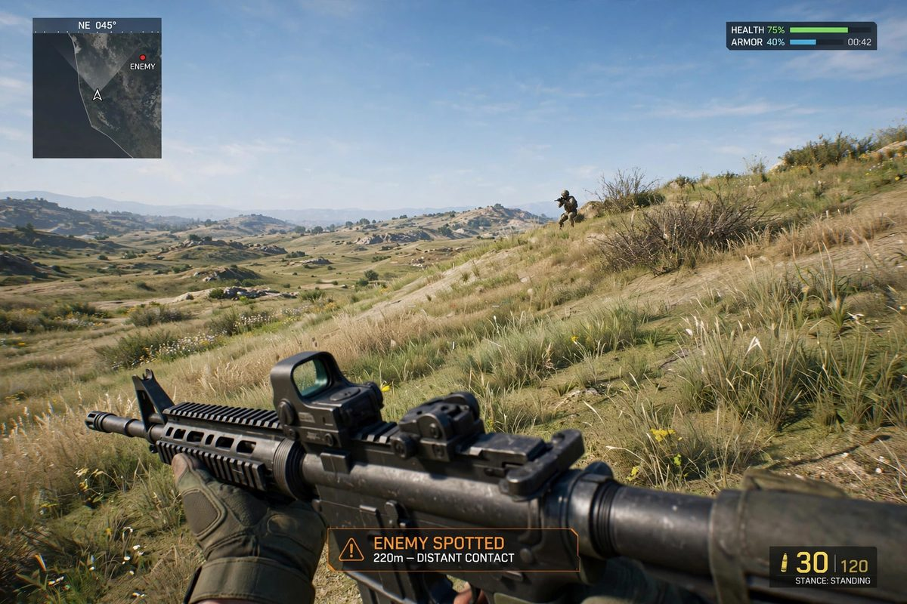

Best PUBG Settings for Visibility: Spot Enemies Faster

Most PUBG deaths start the same way: an enemy sees you first. Spotting opponents early is partly a settings problem. The right graphics and display choices make players stand out against grass, rooftops and shadows.
Why Visibility Is a Settings Problem
PUBG maps are designed to hide people. Tall grass, dark doorways, tree lines and long shadows all give a prone or crouched player natural cover, and the game's default settings make it even stronger. High foliage settings fill the screen with grass, heavy post-processing adds haze and bloom, and low view distance can delay when distant objects render. Competitive players strip all of that away to make the enemy as obvious as possible. Every setting below is judged by one test: does it help you see a player sooner?
Graphics Settings That Help You Spot Enemies
Apply these changes in the Graphics section of Settings, and give yourself a few matches to adjust before deciding whether they suit you.
| Setting | Best Value | Visibility Effect |
|---|---|---|
| Foliage | Very Low | Thins grass so prone enemies are exposed |
| Post-Processing | Very Low | Removes haze, glow and blur |
| Shadows | Very Low or Low | Brightens dark corners and doorways |
| Effects | Low | Less smoke and clutter on screen |
| Textures | Medium or High | Keeps players and objects crisp |
| Anti-Aliasing | Medium | Smooths edges without blurring distant players |
| View Distance | High | Distant enemies render sooner |
| Motion Blur | Off | Image stays sharp while you turn |
| Render Scale | 100 | Full sharpness at your native resolution |
Foliage is the single biggest visibility win. On Very Low, grass is thin and short, which means an enemy lying in a field is far easier to pick out. Post-processing is second: on higher values it adds a soft haze that washes out distant shapes, while Very Low keeps edges sharp. Keep textures and view distance reasonably high: blurry textures and late-rendering objects hurt visibility more than they help.
Brightness, Color and Monitor Settings
Brightness is the most underused visibility setting. Open Settings, then Gameplay, and raise the brightness to around 60 to 70 if you struggle to see inside buildings or in shaded areas. Higher values wash out bright outdoor scenes, so find the level where indoor corners are readable without the sky turning white. On your monitor, switch off any movie or eco mode and use a standard or gaming picture mode. If your monitor has a black equalizer or shadow boost feature, a small increase can lift dark areas without blowing out the rest of the image. Avoid cranking digital vibrance or saturation to extreme levels in your graphics card control panel: a modest increase can help player models stand out from green and brown backgrounds, but too much looks unnatural and tiring over hours of play.
Field of View and Crosshair Choices
Field of view, or FOV, controls how much of the world you see at once. PUBG lets you adjust the first-person FOV between 80 and 103. A higher FOV shows more of your surroundings, which helps you notice movement at the edges of the screen, but it makes distant enemies smaller. Most players settle between 90 and 100 as a balance. In third-person mode, use the free-look key often to scan around corners and over ridges without exposing yourself. Pick a crosshair color that stands out against both bright skies and dark interiors; green or bright cyan work well for most players. Finally, turn off screen shake if the option is available, because a steadier view makes small movements at distance easier to notice.
Remember: Visibility settings only help if you actually scan. No setting replaces the habit of sweeping your view across windows, ridgelines and tree lines every few seconds, and pausing to look before crossing open ground. Settings make enemies easier to see; scanning is what finds them.
Gameplay Habits That Improve Spotting
Good settings are only half the job. Slow down when you enter a new area, and use your scope or binoculars to check distant hills and compounds before you move. Listen as much as you look: footsteps, vehicle engines and gunfire tell you where to aim your eyes, and good audio settings help you pinpoint direction. When you hear a shot, do not spin wildly; check the likely firing positions in order, such as windows, rooftops and ridge crests. Use the in-game compass and the map markers to communicate enemy positions to your squad, because four pairs of eyes beat one. Practice in Training Mode by placing targets at different distances and learning how a player model looks against grass, rock and concrete at 100, 200 and 300 metres. Over time you will notice the tiny shapes and movements that most players walk straight past.
What Does Not Help (and What to Avoid)
Some players look for shortcuts, but there are no legitimate ones. Third-party programs that promise to highlight enemies, remove grass entirely, or change how the game renders are against the game's rules and can get your account banned. Do not use them. Likewise, editing game files to force settings the game does not offer is not worth the risk. Everything in this guide uses the official settings menu and your monitor's own controls, which are safe, allowed, and enough. If an enemy still seems invisible, it is usually a matter of position and habit, not a setting you are missing, and the honest fix is more practice scanning the map.
Frequently Asked Questions
What foliage setting is best for spotting enemies?
Very Low. It makes grass thinner and shorter, so prone or crouched enemies in fields are much easier to see. It also improves your frame rate as a bonus.
Does higher brightness help in PUBG?
Yes, up to a point. A brightness of around 60 to 70 makes dark interiors and shadows easier to read. Going much higher washes out bright outdoor scenes and can hurt visibility instead.
What FOV should I use for best visibility?
Most players use a first-person FOV between 90 and 100. Higher values show more of your surroundings, while lower values make distant enemies appear larger.
Download PUBG Now
Get the official game from the official stores. PUBG on PC is free to play on Steam; PUBG Mobile is available on Google Play and the App Store.